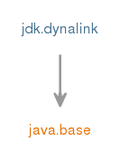

Module jdk.dynalink
Dynalink是用于动态链接对象上的高级操作的库。 这些操作包括“读取属性”，“写入属性”，“调用函数”等。 Dynalink主要用于实现至少有一些表达式具有动态类型（即不能静态决定的类型）的编程语言，并且动态类型的操作表示为call sites 。 这些呼叫站点将在运行时根据所计算的表达式的值的实际类型链接到适当的目标method handles 。 这些可以在调用之间改变，需要多次重新链接呼叫站点以适应新类型; Dynalink处理所有这些和更多。
Dynalink支持使用与JVM基于类的模型不同（甚至根本不同）的对象模型来实现编程语言，并具有自定义类型转换。
Dynalink与java.lang.invoke封装密切相关，并依赖于此 。
虽然java.lang.invoke为invokedynamic调用站点的动态链接提供了一个低级别的API，但它并没有提供一种方式来表达对对象的更高级别的操作，也不提供实现它们的方法。 这些操作是面向对象环境中的常见操作：属性访问，集合元素的访问，方法和构造函数的调用（可能具有多个调度，例如Java重载方法解析的链接和运行时等价物）。 这些都是JVM中一种语言通常需要的功能。 如果语言是静态类型，其类型系统相匹配的是，JVM的，它可以与使用通常的调用，现场访问等指令（如实现这一目标invokevirtual ， getfield ）。 然而，如果语言是动态的（因此，在运行时评估之前，某些表达式的类型是不知道的），或者其对象模型或类型系统与JVM不匹配，则应该使用invokedynamic调用站点，让Dynalink管理他们。
例
Dynalink可能是最好的例子，说明它的用途。 让我们假设你有一个语言的程序，你不必声明一个对象的类型，并且你想访问它上的一个属性： var color = obj.color;
如果您生成了一个Java类来表示上述单行程序，其字节码将如下所示：
aload 2 // load "obj" on stack
invokedynamic "GET:PROPERTY:color"(Object)Object // invoke property getter on object of unknown type
astore 3 // store the return value into local variable "color"
为了链接invokedynamic指令，我们需要一个引导方法。
Dynalink的简约引导方法可能如下所示：
import java.lang.invoke.*;
import jdk.dynalink.*;
import jdk.dynalink.support.*;
class MyLanguageRuntime {
private static final DynamicLinker dynamicLinker = new DynamicLinkerFactory().createLinker();
public static CallSite bootstrap(MethodHandles.Lookup lookup, String name, MethodType type) {
return dynamicLinker.link(
new SimpleRelinkableCallSite(
new CallSiteDescriptor(lookup, parseOperation(name), type)));
}
private static Operation parseOperation(String name) {
...
}
}
上述代码段中有几个重要的对象：
-
DynamicLinker是Dynalink的主要对象，它将调用站点的链接协调到实现其中命名的操作的方法句柄。 它使用DynamicLinkerFactory进行配置和创建。 - 当引导引导方法被调用时，需要创建一个
CallSite对象。 在Dynalink中，这些呼叫站点需要另外实现RelinkableCallSite接口。 “可重新链接”这里指出，如果调用站点在运行时遇到不同类型的对象，其目标将被更改为可以对新遇到的类型执行操作的方法句柄。SimpleRelinkableCallSite和ChainedCallSite（在上述示例中未使用）是由库提供的两个实现。 - Dynalink使用
CallSiteDescriptor对象来保存引导方法的参数：查找和方法类型，因为它需要它们，只要它需要重新链接一个呼叫站点。 - Dynalink使用
Operation对象来表达动态操作。 然而，它并没有规定如何对您的呼叫站点中的操作进行编码。 这就是为什么在上面的例子中，这个parseOperation函数是空的，你可能希望提供代码来将调用站点的名字中的字符串"GET:PROPERTY:color"解析为一个命名的属性getter操作对象作为StandardOperation.GET.withNamespace(StandardNamespace.PROPERTY).named("color")。
您以前的设置可以做些什么？ DynamicLinkerFactory默认创建一个DynamicLinker ，可以链接与通常的Java语义的Java对象。 如果你有这三个简单的课程：
public class A {
public String color;
public A(String color) { this.color = color; }
}
public class B {
private String color;
public B(String color) { this.color = color; }
public String getColor() { return color; }
}
public class C {
private int color;
public C(int color) { this.color = color; }
public int getColor() { return color; }
}
您以某种方式创建自己的实例，并以编程语言将其传递给您的呼叫站点：
for each(var obj in [new A("red"), new B("green"), new C(0x0000ff)]) {
print(obj.color);
}
然后在第一次调用时，Dynalink会将.color getter操作与.color的field getter连接A.color ，在第二次调用时，它将重新链接到B.getColor()返回一个String ，最后在第三次调用时将重新链接到C.getColor()返回一个int 。
我们上面使用的SimpleRelinkableCallSite只记住上次遇到的类型的连接（它实现了所谓的单态内联缓存 ）。
另一个已经提供的实现， ChainedCallSite将记住几种不同类型的链接（它是一个多态内联缓存 ），并且可能是严重应用程序中更好的选择。
动态链接和字节码创建
CallSite对象通常被创建为引导字节码invokedynamic指令的一部分。
因此，Dynalink通常用作将程序编译成Java .class字节码格式的语言运行时的一部分。
Dynalink并不涉及创建字节码类或将其加载到JVM中的方面。
也就是说，Dynalink也可以在没有字节码编译的情况下使用（例如在语言解释器中），通过明确地创建CallSite对象并将它们与解释程序中的动态操作的表示相关联（例如典型的表示法将是语法树中的一些节点对象）。
可用操作
Dynalink在其StandardOperation类中定义了几个标准操作。
用于Java对象的链接器可以链接所有这些操作，并鼓励您至少支持并使用您的语言操作。
标准操作GET和SET需要与至少一个Namespace组合使用，例如表示属性吸气剂，您将使用StandardOperation.GET.withNamespace(StandardNamespace.PROPERTY) 。
Dynalink在StandardNamespace类中定义了三个标准命名空间。
要将固定名称与操作相关联，可以像上例一样使用NamedOperation ： StandardOperation.GET.withNamespace(StandardNamespace.PROPERTY).named("color")表示名为“color”的属性的getter。
多个命名空间的操作
某些语言在属性，元素和方法的对象上可能没有单独的命名空间，源语言结构可能会同时解决其中的几个。 Dynalink支持使用NamespaceOperation指定多个Namespace对象。
语言特定的链接器
定义自己的对象模型不同于基于JVM类的模型和/或使用自己的类型转换的语言将需要创建自己的语言特定的链接器。 请参阅jdk.dynalink.linker软件包，特别是GuardingDynamicLinker接口开始使用。
Dynalink和Java对象
该DynamicLinker由创建的对象DynamicLinkerFactory默认包含的内部实例BeansLinker ，这是一个实现了通常的Java语义上述所有操作，并可以链接，没有其他特定于语言的链接已设法任何Java对象特定于语言的链接链接。
这样，所有语言运行时都具有与普通Java对象的内置互操作性。
有关如何链接各种操作的详细信息，请参阅BeansLinker 。
跨语言互操作性
ADynamicLinkerFactory可配置class loader 。
它将尝试实例化该类加载器可见的所有GuardingDynamicLinkerExporter类，并将其提供的链接组成其创建的DynamicLinker 。
这允许语言之间的互操作性：如果您的JVM中部署了两个语言运行时A和B，并通过上述机制导出其连接器，则语言运行时A将在其DynamicLinker对象中具有来自B的语言特定的链接器实例，反之亦然。
这意味着如果来自语言运行时间B的对象从语言运行时间A传递给代码，则从B接收到的对象时，来自B的链接器将有机会将A中的调用站点链接起来。
- Module Graph:
- 
- 从以下版本开始：
- 9
{kind=link}
-
-
Packages
Exports 软件包 描述 jdk.dynalink 包含用于链接invokedynamic通话网站的接口和类。jdk.dynalink.beans 包含普通Java对象的链接器。jdk.dynalink.linker 包含语言运行时所需的接口和类，以实现自己的特定于语言的对象模型和类型转换。jdk.dynalink.linker.support 包含课程，使语言运行时更方便地实现自己的特定于语言的对象模型，并通过提供一些类的基本实现以及各种实用程序来类型转换。jdk.dynalink.support 包含通过提供某些类的基本实现以及各种实用程序使Dynalink更方便的类。
-
Services
Uses Type 描述 GuardingDynamicLinkerExporter A class acting as a supplier of guarding dynamic linkers that can be automatically loaded by other language runtimes.
-